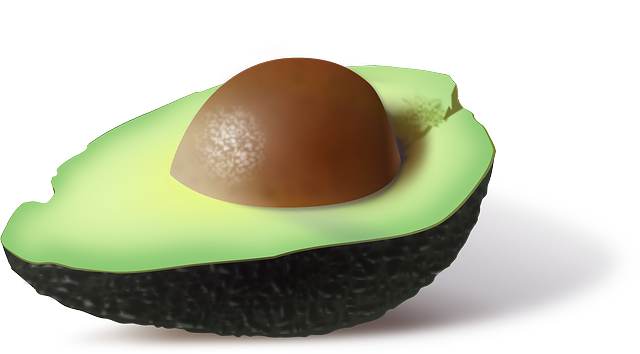
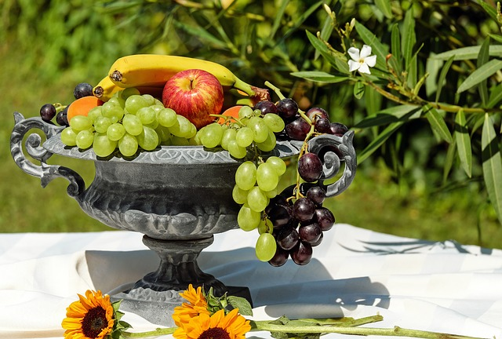

FRUITS ARE VERY TASTY!
INTRODUCING
Globally - The global - Efficient
Fruits and vegetables are the most tasty
and most healthy food in the world!
▶
Eating fruits are really good for you. Eating Vegetables are really good as well! They also taste really good!
Fruits and vegetables are Earth Friendly! Eating healthy is the new cool! Everyone is doing it :). Start Now! It is never to late to eat healthy. try it! it won't hurt to try!
Fruits are top quality and are good for you! try it today. Fruits and Vegetables are considered fast food. Since you can eat it right away. More people need to eat Fruits and Vegetables they are meant for everyone. Give Fruits and Vegetables a try today! It will make you happy!
The Avocado taste really good! you should try it! There are many other healthy food just like the Avocado. If you aren't eating fruits and vegetables you are missing out friend!
FRUITS ARE VERY TASTY!
Fruits and Vegetables grow from the ground! they aren't meant to be eaten! They are different shapes of Fruits and vegtables. They also have alot of different colors. The colors are beautiful and shiny. They also are unique in sizes.
Eating fruits and vegetables will make you happy and feel nice! Just one serving is enough for the day! Try it! you will like it! Fruits and vegetables are the best food in the world!
Be on of the people to change the way they eat and change the world! Give it a try today it will be life changing. Its free! There alot of people that are eating fruits and vegetables! Fruits and vegetables come in different shapes and sizes.
SAY "HELLO" TO THE
REVOLUTION
Fruits
They have been around for years!
learn more about fruits and vegetables
➜